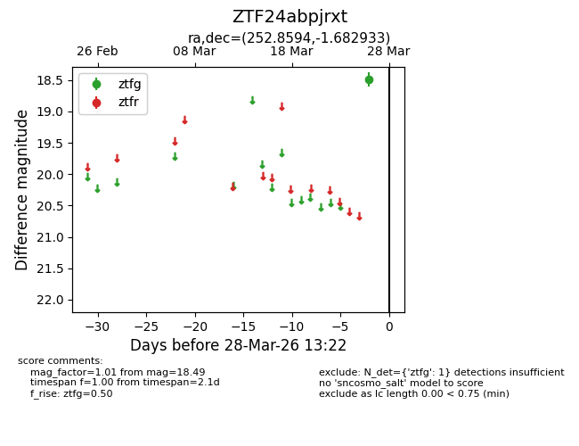
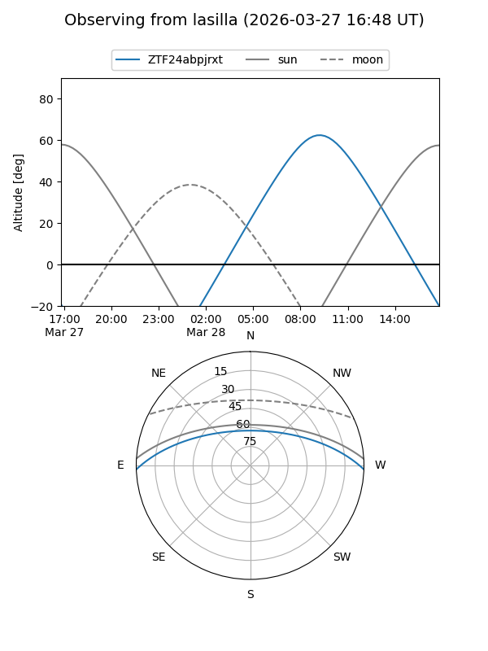
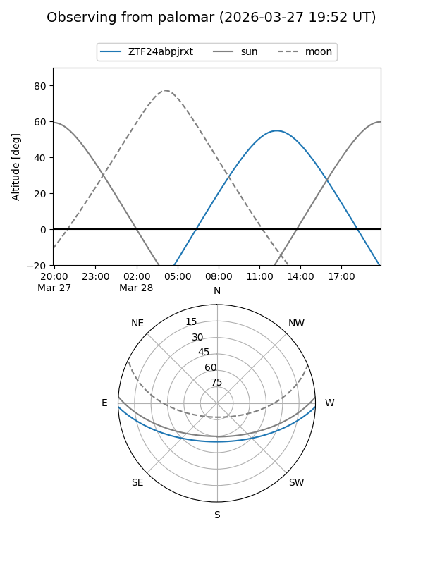

ZTF24abpjrxt
Target ZTF24abpjrxt at 2026-03-28 13:25
Aliases and brokers:
FINK: link
Lasair: link
ALeRCE: link
alt names
ZTF24abpjrxt (ztf,fink_ztf)
Coordinates:
equatorial (ra, dec) = 252.8594,-1.68293
equatorial (HMS+DMS) = 16:51:26.26,-01:40:58.56
galactic (l, b) = (16.5772,+25.55715)
Flags:
Photometry:
last ztfg=18.49
1 ztfg detections
Lightcurve

Visibility


Additional plots